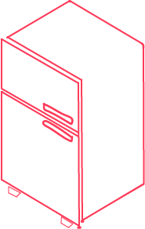

<mat-sidenav-container class="mat-sidenav-container-logged">
  <mat-sidenav #sidenav mode="over" [(opened)]="opened">
    
    <mat-nav-list role="navigation" style="width: inherit;">
      <ul class="menu">
        <li> <a mat-list-item routerLink="/users"><i class="icon fas fa-city"></i>Empresa</a> </li>
        <li> <a mat-list-item routerLink="/hemocomponentes"><i class="icon fas fa-book-medical"></i>Hemocomponentes</a>
        </li>
        <li> <a mat-list-item routerLink="/getaway"><i class="icon fas fa-poll"></i>Transacciones</a> </li>
        <li> <a mat-list-item routerLink="/reports"><i class="icon far fa-clipboard"></i> Reportes</a> </li>
      </ul>
    </mat-nav-list>
  </mat-sidenav>
  <mat-sidenav-content>
    <mat-toolbar>
      <mat-toolbar-row class="d-flex justify-content-between">
        <mat-icon class="menuButton" (click)="sidenav.toggle()" style="cursor: pointer;">menu</mat-icon>
        
        <div class="box">
          <section *ngIf="user.tipoEmpresa == 1">
            <button class="btn btn-danger add" (click)="openDialog()">+</button>
          </section>
          <section>
            
          </section>
          <!-- #docregion mat-menu-trigger-for -->
          <button mat-button [matMenuTriggerFor]="menu" class="window"><i class="fas fa-user user"></i> <p>{{user.iss}}</p></button>
          <!-- #enddocregion mat-menu-trigger-for -->
          <mat-menu #menu="matMenu">
          <label mat-menu-item>{{user.tipoRol}}</label>
          <button mat-menu-item (click)="logout()">Cerrar Sesión</button>
          </mat-menu>
        </div>
      </mat-toolbar-row>
    </mat-toolbar>
    <router-outlet></router-outlet>
  </mat-sidenav-content>
</mat-sidenav-container>

<script src="../../../assets/sidenav.js"></script>
